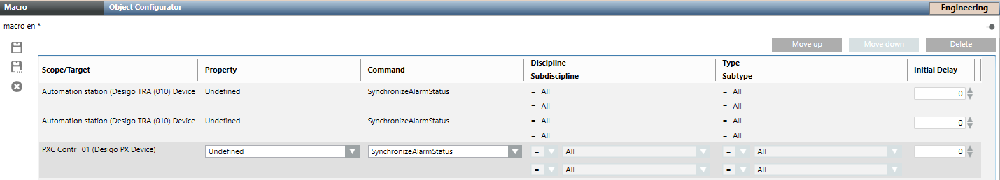
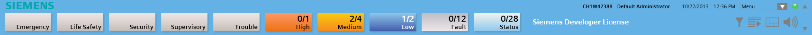
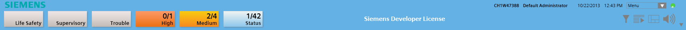

Additional procedures
Prerequisites:
- System Manager is in Engineering mode.
- The System Browser is in Management View.
Desigo PX Online Data Import
- The automation station is Desigo PX V4 or later. Earlier Desigo versions do not store the EXP file on the automation station.
- For Desigo PX online data imports, the check box Supports DB changes must be cleared in the Search rules library.
- Select Project > Field Networks > [Network name].
- Select the Network device tab.
- Open the Discovery Settings expander.
a. Select the Scan timeout in seconds (default is 60 seconds) and enter the maximum scan period. The device discovery is cancelled after the set time expires.
b. Select the filter criterion: - Use network filter and enter the network number.
- Use instance filter and enter the beginning instance and ending instance (object-identifier).
- Use vendor filter and enter a vendor ID.
- Click Save
 .
. - Open the Device Discovery expander.
- Click Scan.
- The automation stations, BACnet router, and management platform are displayed in the Device Discovery Expander.
NOTE: The next step can only be performed after the Scan time in seconds expires. - Select in Network Scan:
a.Import Selection column, the automation stations that must be imported.
NOTE: The library type must be desigo-px.
b. Click Save Project. - Click Import.
- The automation stations are created.
- In the Discovery status area, the Progress column displays the import state.
NOTE: It may take a several minutes before the state100%is displayed.
- After successful import, the BACnet objects display in the System Browser tree after a successfully importing to the Desigo PX automation station.
Alternative Desigo PX Online Data Import
This alternative workflow can be used on communication problems that occur during Desigo PX online data Import.
- The automation station is Desigo PX V4 or later. Earlier Desigo versions do not store the EXP file on the automation station.
- Select Project > Subsystem Networks > [Network name] and click the Network devices tab.
- Open the Discovery Settings expander.
- Select the Scan timeout in seconds (default is 60 seconds) and enter the maximum scan period. The device discovery is cancelled after the set time expires.
- Select the filter criterion:
- Use network filter and enter the Network number filter.
- Use instance filter and enter the Beginning instance and Ending instance (object-identifier).
- Use vendor filter and enter a Vendor ID.
- Open the Device Discovery expander.
- Click Scan.
- The automation stations, BACnet router, and management platform are displayed in the Device Discovery Expander.
NOTE: The next step can only be performed after the Scan time in seconds expires. - Select in Network Scan:
a. in the Import Selection column, the automation stations for import.
NOTE: The library type must be desigo-px.
b. in the Create Device Only column, the automation stations to be created for a device object. - Click Save .
- Click Import.
- The automation stations are created.
- Select Project > Field Networks > [Network name] > Hardware > [Automation station name] for import.
- In the Extended Operation tab, select the Import property.
NOTE: If the automation station does not support online data import, the Import property does not display. - Click Start. The import status displays .
- The BACnet objects displays in the System Browser tree after a successfully importing to the Desigo PX automation station .
Manually Updating the Summary Bar for an Automation Station
Scenario: You want to ensure that all alarms are updated for this automation station.
- In System Browser, select Management View.
- Select Project > Field Networks > [Network name] > Hardware > [Automation station] of the corresponding automation station.
- The BACnet dialog box opens.
- In the Extended Operation tab, select the Object name property.
- Click Get Events.
- The alarm list is updated for this automation station.
Updating the Summary Bar for Multiple Automation Stations Using a Macro
Scenario: You want to update the alarms on all automation stations with a single command.
- In System Browser, select Application View.
- Select Applications > Logics > Macros and select the Macro tab.
- Click Create
 and select New Macro.
and select New Macro. - In the New Object dialog box, enter a name and description.
- Click OK.
- The new macro appears in the Macro tab.
- In System Browser, select Management View.
- Select Project > Field Networks > [Network name] > Hardware > [Automation station] of the corresponding automation station.
- Drag the automation station to the Macro configuration area.
- In the Property column, select the option Not defined from the drop-down list.
- In the Command column, select the option SynchronizeAlarmStatus from the drop-down list.
- Repeat steps 7 to 10 for all automation stations.
- Click Save .
- The macro is defined and all automation station are assigned.

Executing a Macro
- In System Browser, select Application View.
- Select Applications > Logics > Macros > [Macro name].
- In the Operation tab, select the Activity Status property.
- Click Execute.
Changing Project Settings
Activate the following project settings:
Find Desigo PX Primary Server
- In System Browser, select the Logical View.
- Select Logical > [Site name] > Global > [any Global object].
- Select the BACnet Editor tab.
- Open the Main expander.
- The primary server of this site is listed in the Device name text field.

NOTE:
The Logical View only shows primary server objects in the Global folder. The Management View shows the global objects for each automation station. The global objects, however, are only displayed and cannot be changed.
Disabling BACnet Device Communication
- In System Browser, select Management View.
- Select Project > Field Networks > [Network name] > Hardware > [Automation station] of the corresponding automation station.
- The BACnet tab displays.
- In the Extended Operation tab, select the Online property.
- Do the following:
- Click Disable: Communication is disabled. No response to any server except DeviceCommuncationControl or ReinitializeDevice.
- Click Disable Init.: Self-initiation of a service is disabled in the devices. For example, no COV notification or event notification is sent. One exception is the IAm which must be sent as a response to a valid WhoIs inquiry.
- Click Enable: Communication is enabled.
- The Online properties dialog box opens.
- Enter the password for the automation station.
- Enter the duration.
Note: The duration specifies the time a device is disabled or notifications are suppressed. The time is indicated in minutes; a maximum of 65535 minutes is accepted. - Click Send.
- A message indicates
FailedorSuccessfulof the executed function.
 WARNING
WARNING

Missing alarm forwarding:
After Deactivation and Init. deactivation, alarms are not forward under certain circumstances. As a consequence, only properly trained personnel may use these functions and only as needed.
Reinitializing BACnet Device
- In System Browser, select Management View.
- Select Project > Field Networks > [Network name] > Hardware > [Automation station] of the corresponding automation station.
- The BACnet tab displays.
- In the Extended Operation tab, select the System status property.
- Do the following:
- Click Cold Start: The device reboots and restarts.
- Click Warm Start: The device stops and then restarts.
- The Online properties dialog box opens.
- Enter the password for the automation station and click Send.
NOTICE

Default fault
You can execute a cold start or warm start for any BACnet device using this function. However, only trained staff can execute this function in Desigo CC. Therefore, use this function only as needed!
Start and Stop Application Program
- In System Browser, select Management View.
- Select Project > Field Networks > [Network name] > Hardware > [Automation station] of the corresponding automation station.
- The BACnet dialog box opens.
- In the Extended Operation tab, select the Device Operating Mode property.
- Do the following:
- Click Stop: The device reboots and restarts.
- Click Run: The device is stopped and then restarts.
- The Online properties dialog box opens.
- Enter the password for the automation station and click Send.
- The application program stops and the red Device LED does not blink anymore.
Time Sync the Desigo PX Automation Station
The time sync for Desigo PX automations station is automatic via the primary server for the Desigo PX network. Desigo CC detects a change in primary server and modifies the settings accordingly. The following workflow is used if manual settings are nevertheless needed.
- A Desigo PX network is imported.
- The Windows clock of the server or stand-alone station is properly set to the local time zone.
- In System Browser, select Management View.
- Select Project > Field Networks > [Network name] > Hardware > [Automation station name] of the primary automation station.
- The BACnet tab displays.
- Click the Timing and Status Info expander.
- The fields of the time-related parameters display.
- In the Time sync type field, select UTC.
NOTE: The Time sync type for the other BACnet devices (Backup Server) remain set automatically to None. Only the primary automation station needs to be synchronized with the management platform. - In the UTC offset field, check that the offset is correct and matches the server time zone.
- Ignore the other fields.
- Click Save .
NOTE:
The value displayed in the UTC offset field is acquired from the system and cannot be changed and downloaded. You must correct a wrong setting off-line in the system tool. After that, restart or reconnect the system, and check the new value acquired.
Ensuring Data Consistency
Any data inconsistencies between the system database and the automation station must be eliminated with a data import (online or offline import). The automation station reports such data inconsistencies with a COV to Desigo CC. Data inconsistencies occur on the automation station, if:
- The database revision number changes.
- By creating or deleting dynamic objects outside of the management platform.
- The program modification time changes.
- The application program is reloaded.
- The data inconsistency is displayed on the Alarm Summary bar under Status of the alarm class.
- On the Alarm Summary bar, click Status.
- A filtered alarm details list displays. The error message
Configuration outdated (Download or re-import required)displays. - Select the alarm line.
- In the Source column, select Automation station.
- Select the automation station in System Browser. The message
Download or reimport requiredis displayed in the Operation tab, under Consistency. - In the Extended Operation tab, select the Import property.
NOTE: The Import property is not displayed if the automation does not support online import. In this case, use only Offline Import. - Click Start. The import status displays.
- After successfully importing the automation station, the message
Up to datedisplays under the Consistency property. - The error message is removed from the alarm summary bar.
Desigo PX Alarm for Inconsistent Data
Inconsistent datais displayed in the Alarm Summary Bar.
- In the Alarm Summary Bar, double-click the alarm.
- In the Extended Operation tab, select the Import property.
NOTE: If the automation station does not support online data import, the Import property does not display. - Click Start. The import status displays .
- The BACnet objects displays in the System Browser tree after a successfully importing to the Desigo PX automation station .
NOTE:
Do not use the Rediscover function in the Extended operation tab. This may result in incorrect import data on a project with multiple subsystems.
Defining Server User Profiles
Scenario: The setting for the User profile on the server needs to be changed
- In System Browser, select Management View.
- Select Project > Management station > Server.
- Select the System Management tab.
- In the Client profile drop-down list, select the desired profile.
- Click Save .
- Restart Desigo CC to activate the profile.


NOTE:
Each user can have his/her own user profile assigned (see Configuring User > Defining User Properties).
Modifying the display for the PID controller
- In System Browser, select Management View.
- Select Project > System Settings > Libraries > L1-Headquarters > BA > Device > Desigo PX > Object models.
- Select Desigo PX PID controller.
- In the Models&Functions tab, click Modify
 .
. - A confirmation message is displayed.
- Click Yes.
- A Desigo PX PID controller, specific to the project, is created at Project > System Settings > Libraries > L4-Project > BA > Device > Desigo PX > Object models.
- Select the Desigo PX PID controller.
- In the Models&Functions tab, select the Properties expander.
- In the DL3 column, select the check box.
- Integral_Constant
- Derivative_Constant
- Click Save .
Display Automation Station Information on a Data Point
Scenario: You want to display an automation station belonging to a data point.
- In System Browser, select Logical view.
- Select Logical View > [Network Name] > [Plant Name] > [Data Point].
- In the Related Items, the corresponding automation station is displayed under Device.
- Click the displayed related item.
- The information on the automation station is displayed in the Secondary pane.
Modifying the Client Profile
- Select Project > Management station > Server.
- Click the System Management tab.
- In the Client profile drop-down list, select the desired profile.
- Click Save .
- Restart Desigo CC to make the profile active.
NOTE:
Each user can have his/her own client profile assigned (see Configuring User > Defining User Properties).
Deleting a Desigo BACnet Network
- Select Project > Field Networks > [Network name].
- Click the BACnet tab.
- Click Delete Object
 .
. - A confirmation message displays.
- Click Yes.
- The System Manager status bar displays
Node deleted successfully.
NOTE:
The network structure is deleted in the Management View only. It still remains in the Logical View and the User View. In those views, you must manually delete the structure. Select the desired view and then the Views tab. Click Remove to delete the structure tree and use the purge function to delete all unused objects.
Stopping the Desigo BACnet Driver
- Select Project > Management station > Servers > Main Server > Drivers.
- Select the driver.
- In the Extended Operation tab, next to the Manager state, select Stop.
- The changed state of the property is displayed.
Deleting a Desigo BACnet Device
- The driver is not currently associated to a BACnet network.
- Select Project > Management station > Servers > Main Server > Drivers.
- Select the driver.
- Click the BACnet tab.
- Click Delete Object .
- A confirmation message displays.
- Click Yes.
- The System Manager status bar displays
Object deleted successfully.
Note:
You cannot delete a driver that is currently associated to a network. In such cases, the Delete command results in an error message. Since a driver cannot be disassociated, you must first entirely delete the corresponding network before deleting the driver.
Changing Project Size of Data Points
Scenario: You want to change the project size, for example the number of permissible data points.
Available Project Sizes | ||
Type | Data Points | Number of Rooms with DXR2 |
MS | ≤50,000 | Ca. 1,000 |
LS | >50,000 and ≤150,000 | Ca. 3,000 |
- Select Project > Management station > Server > Server.
- In the Extended Operation tab, select the Hardware Category property.
- Select a larger project size from the Hardware Category drop-down list.
- Click Apply.
Purging Unused Objects
- In System Browser, select the desired view and select the top object.
- Click the Views tab.
- In Views, select the top object.
- Click Purge Aggregators and then Yes.
- All objects without a child object are deleted in this view.
- Repeat the Steps 2 through 5 for all views.
Checking the Certificate on the Automation Station
Scenario: You want to check the certificate installed on the Desigo automation station. It can be checked as of version Desigo 6.2 (ABT 2.1.1).
- Select Project > Subsystem Networks > [Network name] > Hardware > [Automation station].
Check Status
- Select the object Infrastructure, certificate [Infra’Crtf].
- In the Extended Operation tab, select the Present value property.
- The following statuses can be displayed:
-Activated(The expiration date is monitored.)
-Expiration warning time(An alarm message is displayed in the alarm bar.)
-Expired(An alarm message is displayed in the alarm bar.)
-Inactive(The expiration data is not monitored.)
Once a certificate has expired, you can no longer access the Setup and Service Assistant with a web browser over a secured connection. You can renew the certificate with ABT Site. In the [Automation Station] tab, select IP and generate a new certificate.
Check Valid to
- Select the object Infrastructure, certificate [Infra’Crtf].
- In the Extended Operation tab, select the Valid to property.
- The end date displays.
Expiration warning time
The expiration warning time is set by default to 90 days. The expiration warning can only be changed in ABT Site.
Check Issuer
- Select the object Infrastructure, certificate [Infra’Crtf].
- In the Extended Operation tab, select the Issuer property.
- The issuer is displayed.